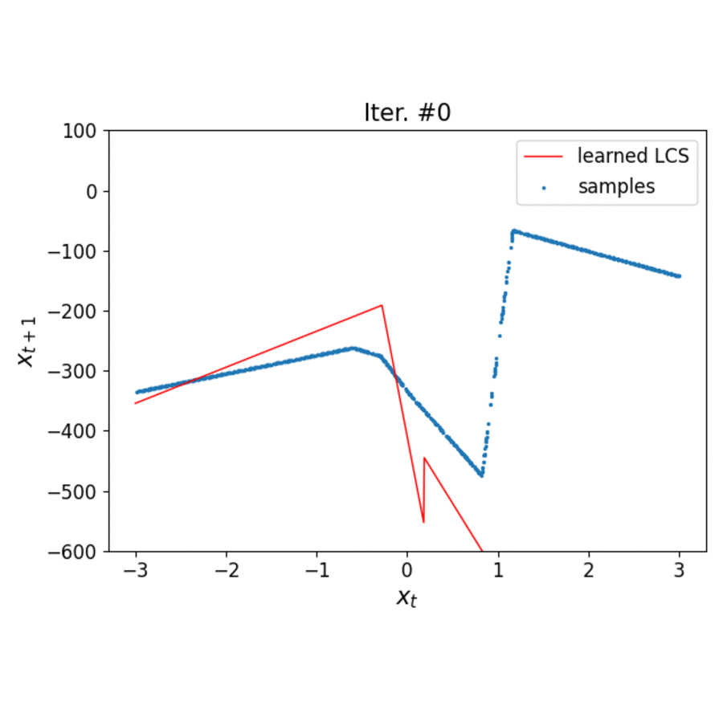
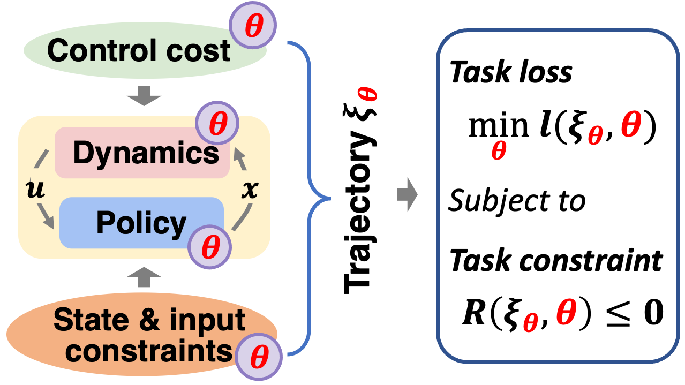
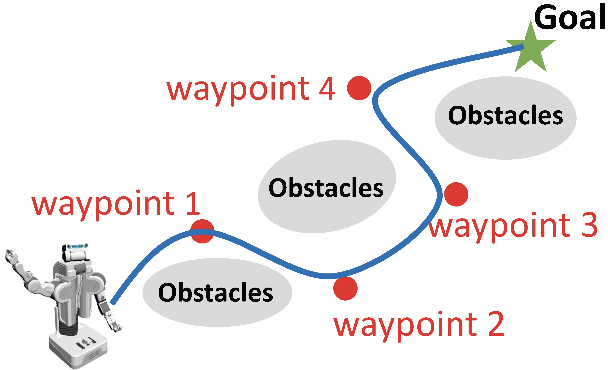
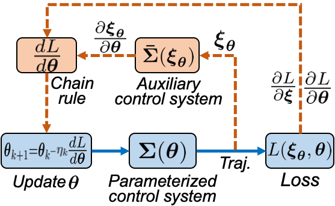
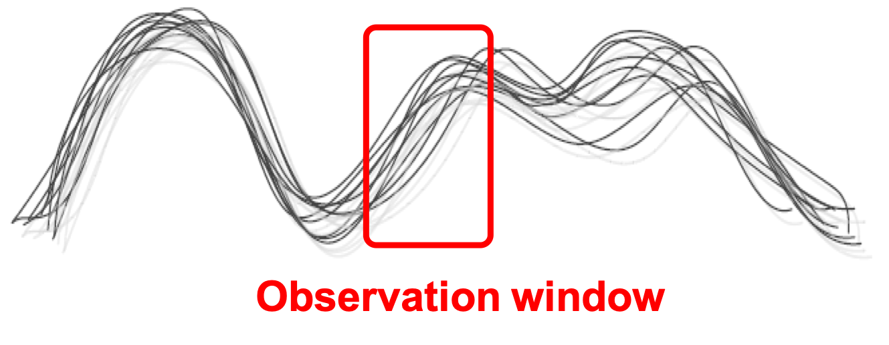
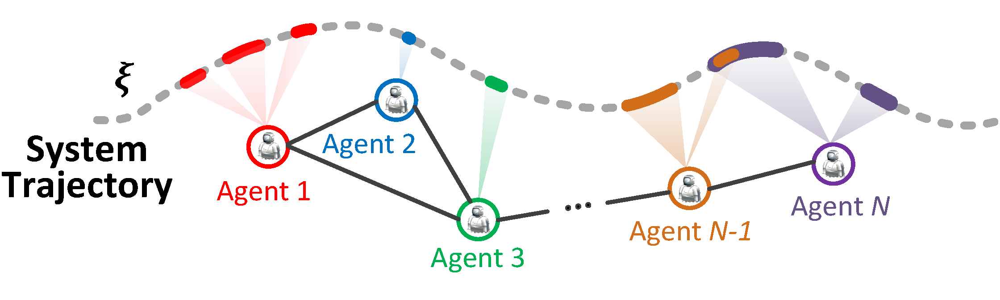
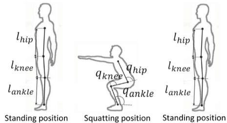

Wanxin Jin

I am a postdoctoral researcher in the GRASP Laboratory at University of Pennsylvania, working with Prof. Michael Posa.
I obtained my Ph.D. in the area of Autonomy and Control in the School of Aeronautics and Astronautics, Purdue University in July 2021. Prior to Purdue, I worked as a research assistant at Technical University of Munich, Germany. I obtained my Master and Bachelor degrees in Control Science and Engineering from Harbin Institute of Technology, China.
Email / Github / Twitter / Google Scholar
Research Interests
My research lies at the intersection of control, machine learning, and optimization, with emphasis on addressing the fundamental and pressing challenges in autonomous systems and human-robot systems.
- Differentiable control and learning, Safe learning and control,
- (Inverse) optimal control, (Inverse) reinforcement learning,
- Hybrid control system, Robust control, Adversarial learning
- Learning with human-on-the-loop, Human-robot teaming,
- Contact-rich robot manipulations, Learning from demonstrations,
- Computation of cognition & motor control, Task and motion planning
My goal is to integrate the complementary benefits of these three disciplines to develop new theories, methods, and systems that provision efficiency, reliablity, and interactive intelligence for next-generation autonomous systems and human-robot systems.
Selected Publications & Submissions

Learning Linear Complementarity Systems
Wanxin Jin, Alp Aydinoglu, Mathew Halm, and Michael Posa
Arixv, 2021
[PDF] /
[Code]
Abstract
This paper investigates the learning, or system identification, of a class of piecewise-affine dynamical systems known as linear complementarity systems (LCSs). We propose a violation-based loss which enables efficient learning of the LCS parameterization, without prior knowledge of the hybrid mode boundaries, using gradient-based methods. The proposed violation-based loss incorporates both dynamics prediction loss and a novel complementarity - violation loss. We show several properties attained by this loss formulation, including its differentiability, the efficient computation of first- and second-order derivatives, and its relationship to the traditional prediction loss, which strictly enforces complementarity. We apply this violation-based loss formulation to learn LCSs with tens of thousands of (potentially stiff) hybrid modes. The results demonstrate a state-of-the-art ability to identify piecewise-affine dynamics, outperforming methods which must differentiate through non-smooth linear complementarity problems.

Safe Pontryagin Differentiable Programming
Wanxin Jin, Shaoshuai Mou, and George J. Pappas
Advances in Neural Information Processing Systems (NeurIPS), 2021
[PDF] /
[Code] /
[Videos]
Abstract
We propose a Safe Pontryagin Differentiable Programming (Safe PDP) methodology, which establishes a theoretical and algorithmic framework to solve a broad class of safety-critical learning and control tasks -- problems that require the guarantee of safety constraint satisfaction at any stage of the learning and control progress. In the spirit of interior-point methods, Safe PDP handles different types of system constraints on states and inputs by incorporating them into the cost or loss through barrier functions. We prove three fundamentals of the proposed Safe PDP: first, both the solution and its gradient in the backward pass can be approximated by solving their more efficient unconstrained counterparts; second, the approximation for both the solution and its gradient can be controlled for arbitrary accuracy by a barrier parameter; and third, importantly, all intermediate results throughout the approximation and optimization strictly respect the constraints, thus guaranteeing safety throughout the entire learning and control process. We demonstrate the capabilities of Safe PDP in solving various safety-critical tasks, including safe policy optimization, safe motion planning, and learning MPCs from demonstrations, on different challenging systems such as 6-DoF maneuvering quadrotor and 6-DoF rocket powered landing.
 Learning from Human Directional Corrections
Learning from Human Directional Corrections
Wanxin Jin, Todd D Murphey, and Shaoshuai Mou
Submitted to IEEE Transactions on Robotics (T-RO), Under review
[PDF] /
[Code] /
[Videos]
Abstract
This paper proposes an approach which enables a robot to learn a control objective function incrementally from human's directional corrections. Existing methods learn from human's magnitude corrections and require a human to carefully choose correction magnitudes, which otherwise can easily lead to over-correction and learning inefficiency. The proposed method only requires human's directional corrections --- corrections that only indicate the direction of a control change without indicating its magnitude --- applied at some time instances during the robot's motion. We only assume that each of human's corrections, regardless of its magnitude, points in a direction that improves the robot's current motion relative to an implicit control objective function. Thus, human's valid corrections always account for half of the correction space. The proposed method uses the direction of a correction to update the estimate of the objective function based on a cutting plane technique. We have established the theoretical results to show that this process guarantees the convergence of the learned objective function to the implicit one. The proposed approach has been examined by numerical examples, a user study on two human-robot games, and a real-world quadrotor experiment. The results confirm the convergence of the approach and show that the approach is significantly more effective (higher success rate), efficient/effortless (less human corrections needed), and accessible (fewer early wasted trials) than the state-of-the-art robot interactive learning schemes.

Learning from Sparse Demonstrations
Wanxin Jin, Todd D Murphey, Dana Kulic, Neta Ezer, and Shaoshuai Mou
Submitted to IEEE Transactions on Robotics (T-RO), Conditionally Accepted
[PDF]/
[Code] /
[Videos]
Abstract
This paper proposes an approach which enables a robot to learn an objective function from sparse demonstrations of an expert. The demonstrations are given by a small number of sparse waypoints; the waypoints are desired outputs of the robot's trajectory at certain time instances, sparsely located within a demonstration time horizon. The duration of the expert's demonstration may be different from the actual duration of the robot's execution. The proposed method enables to jointly learn an objective function and a time-warping function such that the robot's reproduced trajectory has minimal distance to the sparse demonstration waypoints. Unlike existing inverse reinforcement learning techniques, the proposed approach uses the differential Pontryagin's maximum principle, which allows direct minimization of the distance between the robot's trajectory and the sparse demonstration waypoints and enables simultaneous learning of an objective function and a time-warping function. We demonstrate the effectiveness of the proposed approach in various simulated scenarios. We apply the method to learn motion planning/control of a 6-DoF maneuvering unmanned aerial vehicle (UAV) and a robot arm in environments with obstacles. The results show that a robot is able to learn a valid objective function to avoid obstacles with few demonstrated waypoints.

Pontryagin Differentiable Programming: An End-to-End Learning and Control Framework
Wanxin Jin, Zhaoran Wang, Zhuoran Yang, and Shaoshuai Mou
Advances in Neural Information Processing Systems (NeurIPS), 2020
[PDF] /
[Code] /
[Videos]
Abstract
This paper develops a Pontryagin Differentiable Programming (PDP) methodology, which establishes a unified framework to solve a broad class of learning and control tasks. The PDP distinguishes from existing methods by two novel techniques: first, we differentiate through Pontryagin’s Maximum Principle, and this allows to obtain the analytical derivative of a trajectory with respect to tunable parameters within an optimal control system, enabling end-to-end learning of dynamics, policies, or/and control objective functions; and second, we propose an auxiliary control system in the backward pass of the PDP framework, and the output of this auxiliary control system is the analytical derivative of the original system’s trajectory with respect to the parameters, which can be iteratively solved using standard control tools. We investigate three learning modes of the PDP: inverse reinforcement learning, system identification, and control/planning. We demonstrate the capability of the PDP in each learning mode on different high-dimensional systems, including multi-link robot arm, 6-DoF maneuvering quadrotor, and 6-DoF rocket powered landing.

Inverse Optimal Control from Incomplete Trajectory Observations
Wanxin Jin, Dana Kulic, Shaoshuai Mou, and Sandra Hirche
The International Journal of Robotics Research (IJRR), 40(6-7):848–865,
2021
[PDF] /
[Code]
Abstract
This article develops a methodology that enables learning an objective function of an optimal control system from incomplete trajectory observations. The objective function is assumed to be a weighted sum of features (or basis functions) with unknown weights, and the observed data is a segment of a trajectory of system states and inputs. The proposed technique introduces the concept of the recovery matrix to establish the relationship between any available segment of the trajectory and the weights of given candidate features. The rank of the recovery matrix indicates whether a subset of relevant features can be found among the candidate features and the corresponding weights can be learned from the segment data. The recovery matrix can be obtained iteratively and its rank non-decreasing property shows that additional observations may contribute to the objective learning. Based on the recovery matrix, a method for using incomplete trajectory observations to learn the weights of selected features is established, and an incremental inverse optimal control algorithm is developed by automatically finding the minimal required observation. The effectiveness of the proposed method is demonstrated on a linear quadratic regulator system and a simulated robot manipulator.

Distributed Inverse Optimal Control
Wanxin Jin and Shaoshuai Mou
Automatica, Volume 129, 2021
[PDF] /
[Code]
Abstract
This paper develops a distributed approach for inverse optimal control (IOC) in multi-agent systems. Here each agent can only communicate with certain nearby neighbors and only accesses segments of system’s trajectory, which is not sufficient for the agent to solve the IOC problem alone. By introducing the concept of the data effectiveness and bridging the connection between each segment and its contribution to solving IOC, we formulate the IOC problem as a problem of achieving least-square solutions via a distributed algorithm. Simulations are provided to validate the proposed distributed IOC approach.

Inverse Optimal Control for Multiphase cost functions
Wanxin Jin, Dana Kulic, Jonathan Lin, Shaoshuai Mou, and Sandra Hirche
IEEE Transactions on Robotics (T-RO), 35(6):1387–1398,
2019
[PDF] /
[Code]
Abstract
In this paper, we consider a dynamical system whose trajectory is a result of minimizing a multiphase cost function. The multiphase cost function is assumed to be a weighted sum of specified features (or basis functions) with phase-dependent weights that switch at some unknown phase transition points. A new inverse optimal control approach for recovering the cost weights of each phase and estimating the phase transition points is proposed. The key idea is to use a length-adapted window moving along the observed trajectory, where the window length is determined by finding the minimal observation length that suffices for a successful cost weight recovery. The effectiveness of the proposed method is first evaluated on a simulated robot arm, and then, demonstrated on a dataset of human participants performing a series of squatting tasks. The results demonstrate that the proposed method reliably retrieves the cost function of each phase and segments each phase of motion from the trajectory with a segmentation accuracy above 90%.
Academic Honors & Awards
- Best Student Paper Finalist at IEEE 40th Digital Avionics Systems Conference (DASC) — 09.2021
- ICON Outstanding Research Awards, Purdue University — 04.2021
- Magoon Award for Excellence in Teaching, Purdue University — 09.2020
- Ross Fellowship, Purdue University — 2017-2018
- First prize winner of Provincial Science and Technology Award, Heilongjiang, China – 06.2017